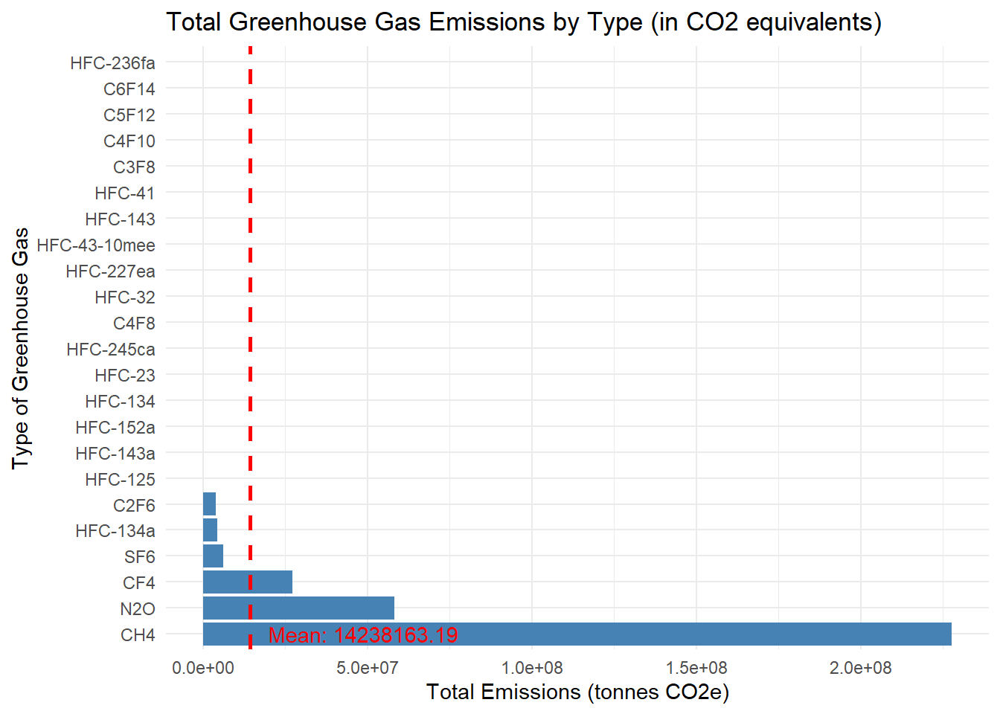
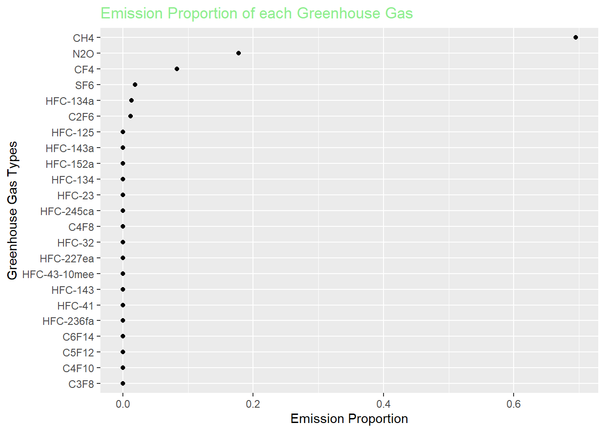
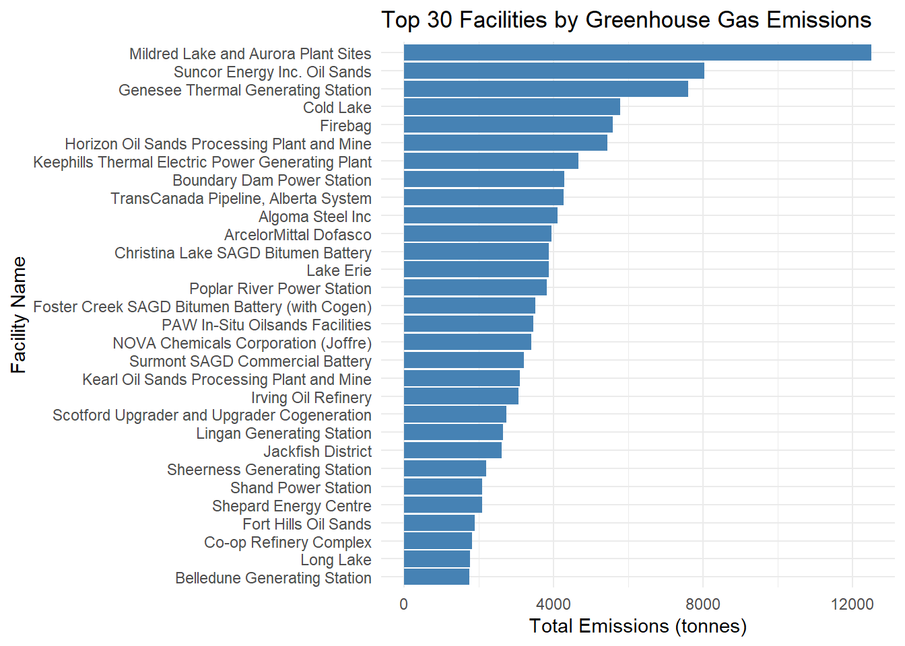
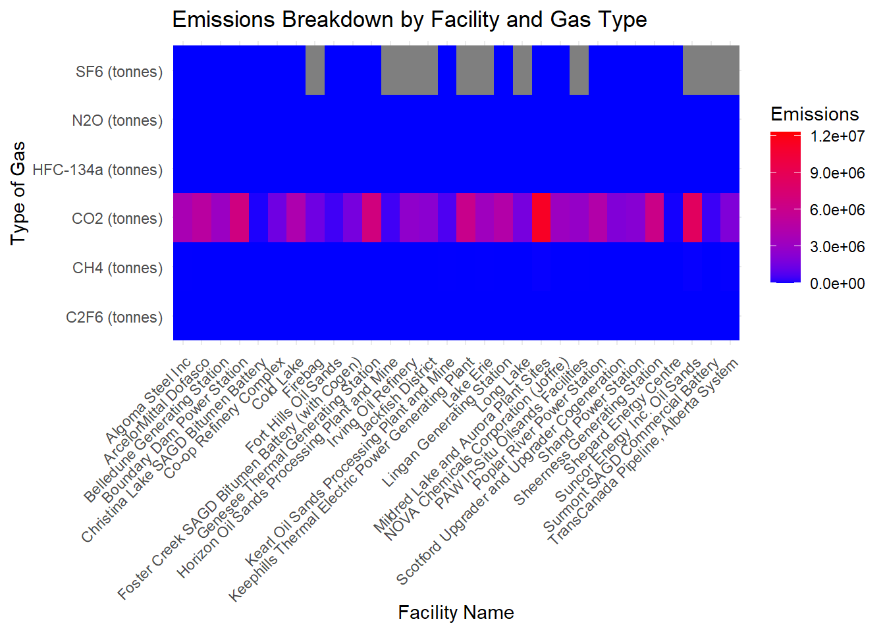
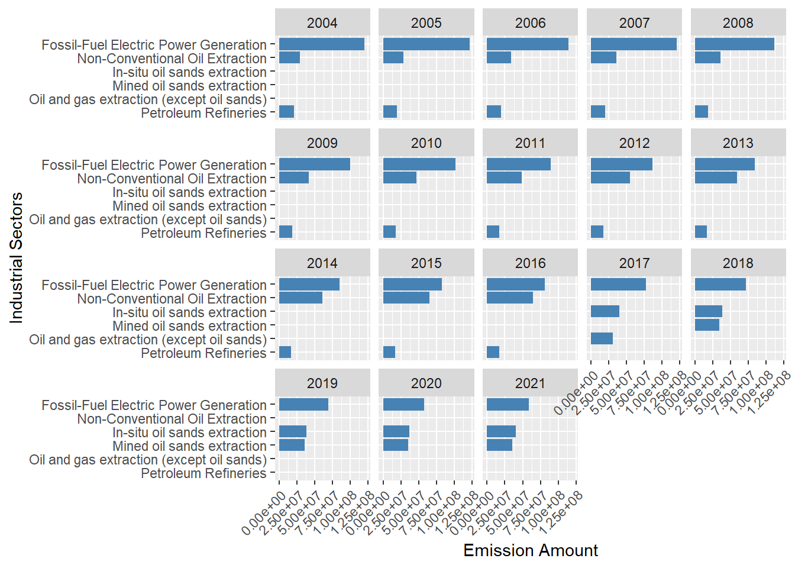
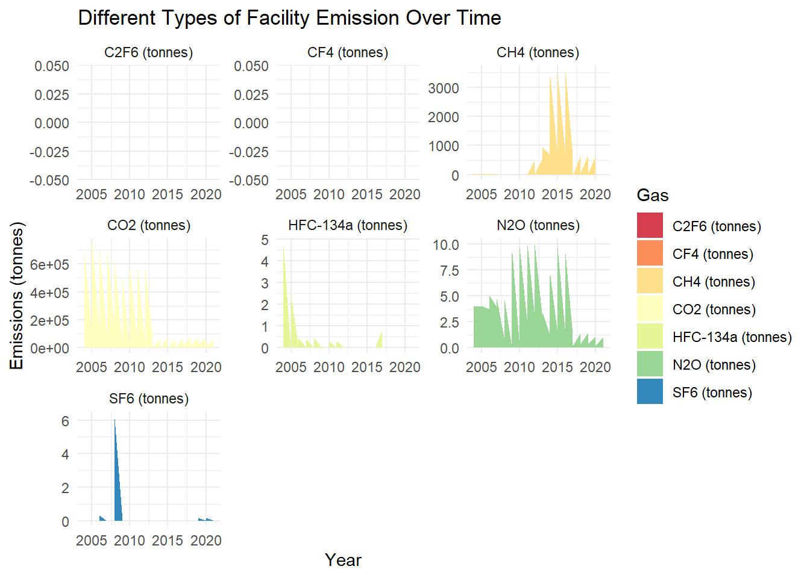
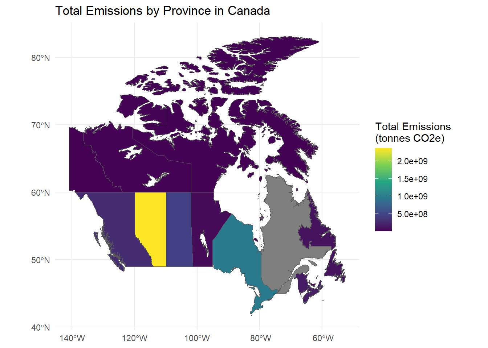
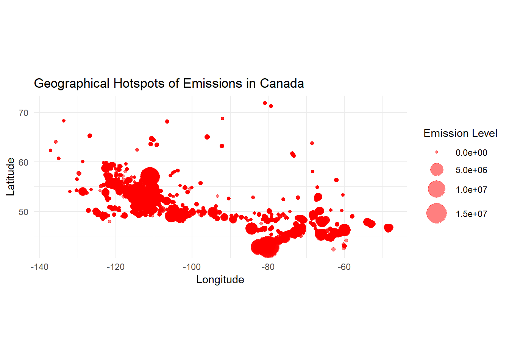
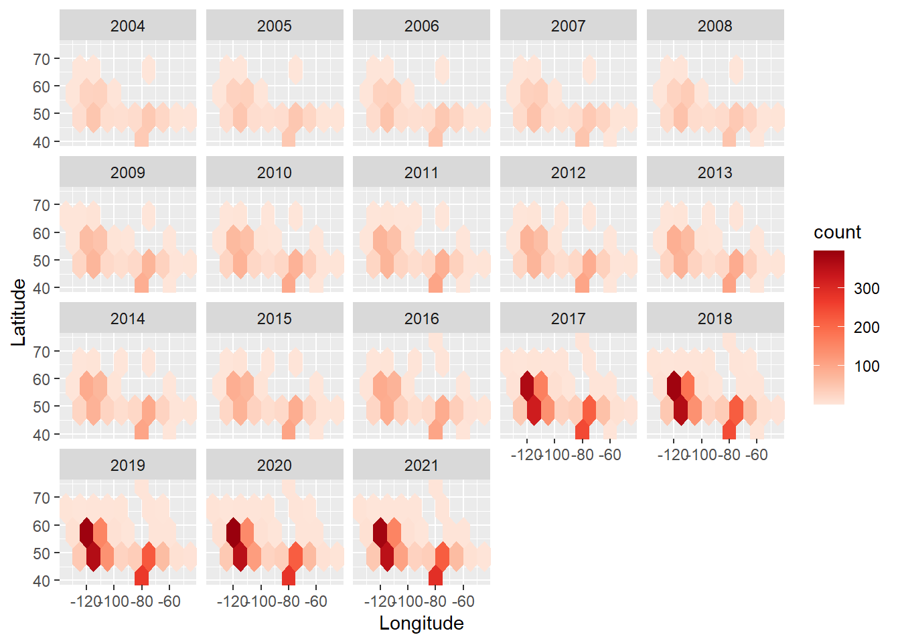
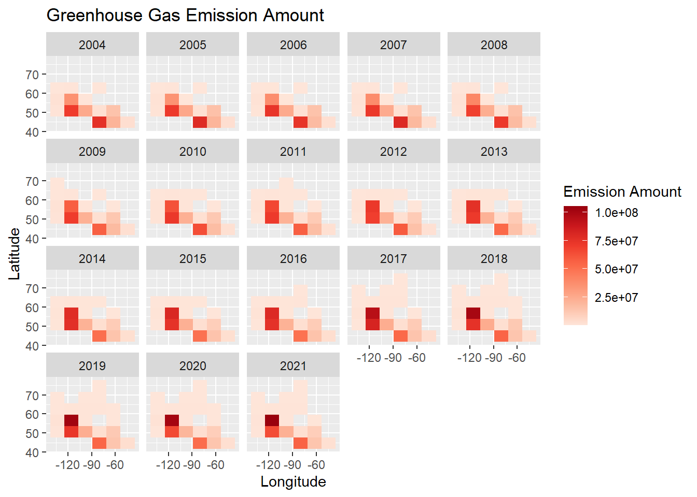

Code
library(dplyr)
library(ggplot2)
library(readr)
library(GGally)
library(tidyr)
library(redav)
library(statebins)
library(forcats)
library(plotly)
library(tibble)
library(rlang)
library(sf)
library(rnaturalearth)library(dplyr)
library(ggplot2)
library(readr)
library(GGally)
library(tidyr)
library(redav)
library(statebins)
library(forcats)
library(plotly)
library(tibble)
library(rlang)
library(sf)
library(rnaturalearth)# Load the datasets
df_large_facilities <- read_csv("data/Greenhouse gas emissions from large facilities.csv", locale = locale(encoding = "ISO-8859-1"), show_col_types = FALSE)
df_all_factories <- read_csv("data/PDGES-GHGRP-GHGEmissionsGES-2004-Present.csv", locale = locale(encoding = "ISO-8859-1"), show_col_types = FALSE)Q1: What are the major types of greenhouse gases emitted by these facilities?
Given the variety of gases, we will focus on the total emissions (in CO2 equivalents) for each type of gas to understand their relative impact. The visualizations will include:
# Identify the columns for different greenhouse gases
ghg_columns <- grep("tonnes CO2e", names(df_all_factories), value = TRUE)
ghg_columns <- ghg_columns[!grepl("Total", ghg_columns)]
# Summing up the emissions for each type of greenhouse gas
ghg_emissions <- df_all_factories %>%
select(all_of(ghg_columns)) %>%
replace(is.na(.), 0) %>%
summarise_all(sum)
# Transforming data for ggplot
ghg_data <- as.data.frame(t(ghg_emissions))
ghg_data <- rownames_to_column(ghg_data, var = "Gas")
ghg_data$Value <- as.numeric(ghg_data$V1)
ghg_data$Gas <- gsub(" \\(tonnes CO2e.*$", "", ghg_data$Gas)
ghg_data$proportion <- prop.table(ghg_data$Value)
# Calculate the mean and median
mean_value <- mean(ghg_data$Value)
median_value <- median(ghg_data$Value)
# Bar plot with auxiliary lines
ggplot(ghg_data, aes(x = reorder(Gas, -Value), y = Value)) +
geom_bar(stat = "identity", fill = "steelblue") +
coord_flip() +
geom_hline(yintercept = mean_value, linetype = "dashed", color = "red", linewidth = 1) + # Changed from size to linewidth
labs(title = "Total Greenhouse Gas Emissions by Type (in CO2 equivalents)",
x = "Type of Greenhouse Gas", y = "Total Emissions (tonnes CO2e)") +
theme_minimal() +
annotate("text", x = 1, y = mean_value, label = paste("Mean:", round(mean_value, 2)), hjust = -0.1, color = "red") 
We can observe that without plotting CO2 (which is the largest greenhouse gas), other main types of greenhouse gas emitted by the facilities are CH4, N2O, CF4, SF4 etc.
ggplot(ghg_data,aes(x = proportion, y=fct_reorder(factor(Gas), proportion)))+
geom_point()+
xlab("Emission Proportion")+
ylab("Greenhouse Gas Types")+
ggtitle("Emission Proportion of each Greenhouse Gas")+
theme(plot.title = element_text(color = "lightgreen"))
This confirms our finding that CH4, N2O, and CF4 will take up the majority of greenhouse gas emission amount without taking the most substantial CO2 into account.
Bar Chart - Total Greenhouse Gas Emissions by Type (in CO2 equivalents): This chart shows the total emissions of each type of greenhouse gas. It helps in identifying the gases with the highest emissions.
Cleveland Plot - Proportion of Each Greenhouse Gas in Total Emissions: This chart illustrates the relative proportions of different greenhouse gases in the total emissions. It provides a clear view of the relative contribution of each gas to the overall emissions.
Q2: Which facilities contribute most significantly to these emissions?
To address the question of which facilities contribute most significantly to greenhouse gas emissions, we can analyze the two datasets with respect to facility-level emissions data. For this analysis, we will create three types of visualizations:
# Remove any non-numeric characters (like commas or text), then convert to numeric
df_large_facilities$`Total emissions` <- as.numeric(gsub("[^0-9\\.]", "", df_large_facilities$`Total emissions`, perl = TRUE))
# Handle cases where there might be NA values after conversion
df_large_facilities <- df_large_facilities %>%
filter(!is.na(`Total emissions`))
# Selecting the top 100 facilities by total emissions
top_facilities <- df_large_facilities %>%
arrange(desc(`Total emissions`)) %>%
head(30)
# Creating the bar chart
ggplot(top_facilities, aes(x = reorder(`Facility name`, `Total emissions`), y = `Total emissions`)) +
geom_bar(stat = "identity", fill = "steelblue") +
coord_flip() +
labs(title = "Top 30 Facilities by Greenhouse Gas Emissions",
x = "Facility Name", y = "Total Emissions (tonnes)") +
theme_minimal()
library(jsonlite)Warning: package 'jsonlite' was built under R version 4.3.2
Attaching package: 'jsonlite'The following objects are masked from 'package:rlang':
flatten, unboxbar_data = top_facilities%>%
select(`Facility name`,`Total emissions`)
write_json(bar_data,"top_facilities.json")As we can see, the largest contributor is Mildred Lake and Aurora Plant Sites in 2021. Other high level emission facilities can also be found.
# Filter and select relevant columns for the top facilities
top_facilities_detailed <- df_all_factories %>%
filter(`Facility Name / Nom de l'installation` %in% top_facilities$`Facility name`) %>%
select(`Facility Name / Nom de l'installation`, `CO2 (tonnes)`, `CH4 (tonnes)`, `N2O (tonnes)`, `SF6 (tonnes)`, `HFC-134a (tonnes)`, `C2F6 (tonnes)`) %>% # Corrected the column name
pivot_longer(cols = -`Facility Name / Nom de l'installation`, names_to = "Gas", values_to = "Emissions")
# Creating the heatmap
ggplot(top_facilities_detailed, aes(x = `Facility Name / Nom de l'installation`, y = Gas, fill = Emissions)) +
geom_tile() +
scale_fill_gradient(low = "blue", high = "red") +
labs(title = "Emissions Breakdown by Facility and Gas Type",
x = "Facility Name", y = "Type of Gas") +
theme_minimal() +
theme(axis.text.x = element_text(angle = 45, hjust = 1))
In our case, the heatmap will display emissions data by gas type for each top-emitting facility. Here’s how to interpret the heatmap in the context of Q2:
Axis Labels: The x-axis represents the facility names. The y-axis represents the different types of greenhouse gases (e.g., CO2, NO2, etc.)
Color Intensity: The color intensity in each cell of the heatmap corresponds to the emission levels. Typically, if the cell color is more close to red, it signifies higher levels of emission while if the cell color tends to blue, it signifies lower level of emission for certain gas.
Interpreting the Data: Locate facilities with cell color more close to red, then these are the facilities contributing significantly to overall emissions. Identify which gas types have the deepest red cells across facilities. These are the gases that contribute most to emissions at each facility. We can also compare facilities to see if certain ones have higher emissions for specific gases.
Contextual Understanding: The heatmap provides a comparative view. It shows how each facility’s emissions for each gas type compare to others. For instance, we can observe that even if the facility Mildred Lake and Aurora Plant Sites has the highest total emission, its emission amount is largely concentrated on CO2. When it comes to other types of gas like NO2 and CH4, it doesn’t evince a prominent lead compared with other facilities.
Lastly, serving as one extension to the question Q2, we consider all years from 2004 to 2021 and this time we show the total amount of greenhouse gas based on the industrial sectors (English Facility NAICS Code Description) rather than specific facilities.
group_facility <- df_all_factories %>%
group_by(`Reference Year / Année de référence`, `English Facility NAICS Code Description / Description du code SCIAN de l'installation en anglais`) %>%
summarise(total_emission = sum(`Total Emissions (tonnes CO2e) / Émissions totales (tonnes éq. CO2)`)) %>%
arrange(desc(total_emission)) %>%
slice_head(n = 3) %>%
ungroup()`summarise()` has grouped output by 'Reference Year / Année de référence'. You
can override using the `.groups` argument.ggplot(group_facility, aes(x = total_emission, y=fct_reorder(factor(`English Facility NAICS Code Description / Description du code SCIAN de l'installation en anglais`), total_emission)))+
geom_col(fill='steelblue')+
xlab("Emission Amount") +
ylab("Industrial Sectors") +
facet_wrap(~`Reference Year / Année de référence`) +
theme(axis.text.x = element_text(angle = 45, hjust = 1))
According to the facet bar chart, the major industrial sectors producing the most greenhouse gas are always the same across these years (Fossil-Fuel Electric Power Generation, Oil&Sand extraction, Petroleum Refine etc.) Also, even if the Fossil-Fuel Electric Power Generation sector always produces the highest amount of greenhouse gas emission each year, the specific amount of emission shows a decreasing trend from 2004 to 2021. Under the consideration that this sector is at the top of emission amount, this decreasing trend could be explained by more and more government regulation.
Q3: How have emission patterns changed over time?
To analyze and visualize how emission patterns have changed over time, we can create visualizations that show trends in emissions over the years. Here we present two types of visualizations that can effectively convey this information from certain angles:
sum_each_year <- df_all_factories %>%
group_by(`Reference Year / Année de référence`) %>%
summarize(EmissionSum = sum(`Total Emissions (tonnes CO2e) / Émissions totales (tonnes éq. CO2)`))
plot_ly(sum_each_year, x = ~`Reference Year / Année de référence`, y = ~EmissionSum, type = 'scatter', mode = 'lines+markers') %>%
layout(title = 'Emission across the Years',
xaxis = list(title = 'Years'),
yaxis = list(title = 'Emission Amount'))This interactive time series plot shows the pattern of Canadian facility total emission amount of greenhouse gas from 2004 to 2021. The facility total emission approximately dropped from 280M to 260M on 2007 and maintained around this amount until 2016 when it rised again to almost 300M. As a matter of fact, we can further analyze this trend by displaying the total emission amount regarding to each province in Canada.
Province_sum_Year <- df_all_factories %>%
group_by(`Facility Province or Territory / Province ou territoire de l'installation`, `Reference Year / Année de référence`) %>%
summarize(EmissionSum = sum(`Total Emissions (tonnes CO2e) / Émissions totales (tonnes éq. CO2)`))`summarise()` has grouped output by 'Facility Province or Territory / Province
ou territoire de l'installation'. You can override using the `.groups`
argument.plot_ly(Province_sum_Year, x = ~`Reference Year / Année de référence`, y = ~EmissionSum, color = ~`Facility Province or Territory / Province ou territoire de l'installation`, type = 'scatter', mode = 'lines+markers') %>%
layout(title = 'Yearly Emission Value for each Province',
xaxis = list(title = 'Years'),
yaxis = list(title = 'Emission Value'),
showlegend = TRUE)Warning in RColorBrewer::brewer.pal(N, "Set2"): n too large, allowed maximum for palette Set2 is 8
Returning the palette you asked for with that many colors
Warning in RColorBrewer::brewer.pal(N, "Set2"): n too large, allowed maximum for palette Set2 is 8
Returning the palette you asked for with that many colorsThe trend we can observe is the facility emission amount of Alberta shows an increasing trend from 2004 to 2021 whereas the emission amount in the province Ontario shows a decreasing trend even if this decreasing trend seems to halt after 2015. Other Canadian provinces have less emission amount (ranging from 0 to 30M) compared with these two provinces and they do not have much variation in their emission amount across these years.
# Define the year column and gas columns
year_column <- "Reference Year / Année de référence"
gas_columns <- c("CH4 (tonnes)", "N2O (tonnes)", "CF4 (tonnes)", "SF6 (tonnes)", "HFC-134a (tonnes)", "C2F6 (tonnes)")
year_col <- sym(year_column)
gas_col <- sym("CO2 (tonnes)")
long_format <- df_all_factories %>%
select(!!year_col, !!gas_col) %>%
pivot_longer(cols = -!!year_col, names_to = "Gas", values_to = "Emissions")
for(gas_column in gas_columns) {
gas_col <- sym(gas_column)
new_long_format <- df_all_factories %>%
select(!!year_col, !!gas_col) %>%
pivot_longer(cols = -!!year_col, names_to = "Gas", values_to = "Emissions")
long_format <- rbind(long_format, new_long_format)
}
ggplot(long_format, aes(x = `Reference Year / Année de référence`, y = Emissions, fill = Gas)) +
geom_area(position = 'stack') +
labs(title = paste("Different Types of Facility Emission Over Time"),
x = "Year", y = "Emissions (tonnes)") +
facet_wrap(~Gas, scale="free") +
theme_minimal() +
scale_fill_brewer(palette = "Spectral")
From the 7 gases we showed above, we can observe some interesting patterns that CO2 emission drops substantially roughly after 2013, CH4 emission amount has increased since 2011, C2F6 and CF4 never play an important role in greenhouse gas emission amount etc.
In these visualizations: - The time series plot provides a clear view of the overall trend in emissions. - The stacked area chart shows how the proportion of different gases in the total emissions has evolved over time.
Q4: Are there any geographical hotspots for high levels of emissions?
To analyze and visualize geographical hotspots for high levels of emissions, we can create maps that highlight areas with significant emission levels. Since we have emissions data from large facilities in Canada, we can use this data along with the geographical coordinates (latitude and longitude) of each facility to create these visualizations.
Here are the visualizations we can create:
# Load geographical data for Canadian provinces
canada_provinces <- ne_states(country = "canada", returnclass = "sf")
# Aggregate emissions by province
emissions_by_province <- df_all_factories %>%
group_by(`Facility Province or Territory / Province ou territoire de l'installation`) %>%
summarise(Total_Emissions = sum(`Total Emissions (tonnes CO2e) / Émissions totales (tonnes éq. CO2)`, na.rm = TRUE))
# Join with geographical data
map_data <- left_join(canada_provinces, emissions_by_province, by = c("name" = "Facility Province or Territory / Province ou territoire de l'installation"))
# Plot the choropleth map
choropleth_map <- ggplot(map_data) +
geom_sf(aes(fill = Total_Emissions)) +
scale_fill_viridis_c(name = "Total Emissions\n(tonnes CO2e)") +
labs(title = "Total Emissions by Province in Canada") +
theme_minimal()
print(choropleth_map)
We can observe that the major emission is concentrated on lower latitudes in the inland provinces like Alberta, Ontario, Saskatchewan etc.
# Create bubble charts showing emissions per facility
bubble_map <- ggplot(df_all_factories, aes(x = Longitude, y = Latitude, size = `Total Emissions (tonnes CO2e) / Émissions totales (tonnes éq. CO2)`)) +
geom_point(alpha = 0.5, color = "red") + # Set transparency and color
scale_size(range = c(1, 10)) + # Adjust bubble size
labs(title = "Geographical Hotspots of Emissions in Canada",
x = "Longitude", y = "Latitude",
size = "Emission Level") +
theme_minimal() +
coord_fixed(1.3) # Set a fixed aspect ratio to display the map correctly
print(bubble_map)
library(sf)
library(jsonlite)
library(geojsonsf)
# Select relevant columns for the bubble map
bubble_data <- df_all_factories %>%
select(Longitude, Latitude, `Total Emissions (tonnes CO2e) / Émissions totales (tonnes éq. CO2)`)
colnames(bubble_data) = c("Longitude","Latitude","rate")
# Write to a JSON file
write_json(bubble_data, "bubble_data.json", pretty = TRUE)This bubble plot further confirms our finding that the lower latitude inland regions in Canada should account for the major greenhouse gas emission amount.
In these visualizations: - The choropleth map provides an overview of emissions by province. - The bubble map shows the precise locations of high-emission facilities.
As an extension to this question Q4, we can further investigate if there is any regional emission variation across these years
ggplot(df_all_factories, aes(x = Longitude, y = Latitude))+
geom_hex(binwidth = 10, na.rm = TRUE)+
scale_fill_distiller(palette = "Reds", direction = 1)+
xlab("Longitude")+
ylab("Latitude")+
facet_wrap(~`Reference Year / Année de référence`)
ggtitle("Hexagonal Heatmap of bin Counts")$title
[1] "Hexagonal Heatmap of bin Counts"
attr(,"class")
[1] "labels"Number of facility emission reports being collected is higher at the southern part of Canada(regions of low latitude). Moreover, based on the facet hex plot, this variation becomes more noticeable and distinct year over year, which means the more greenhouse gas emission facilities are established in the south than in the north. Therefore, this might explain why we saw the phenomenon that majority of facility emission is concentrated in the south. If we further explore the specific amount of greenhouse gas emission:
ggplot(df_all_factories, aes(x = Longitude, y = Latitude, weights = `Total Emissions (tonnes CO2e) / Émissions totales (tonnes éq. CO2)`)) +
geom_bin2d(bins = 5) +
scale_fill_distiller(palette = "Reds", direction = 1) +
facet_wrap(~`Reference Year / Année de référence`) +
labs(x="Longitude",
y="Latitude",
title = "Greenhouse Gas Emission Amount",
fill = "Emission Amount")
The heatmap confirms our previous finding that the southern and middle regions (lower latitudes and in-between longitudes) have more greenhouse gas emission, but it also shows that along with the increase of the number of facilities(increased number of facility emission reports), the facility emission amount in the southern regions did increase but not in a very significant way as we compare the regions with high latitudes and low latitudes.